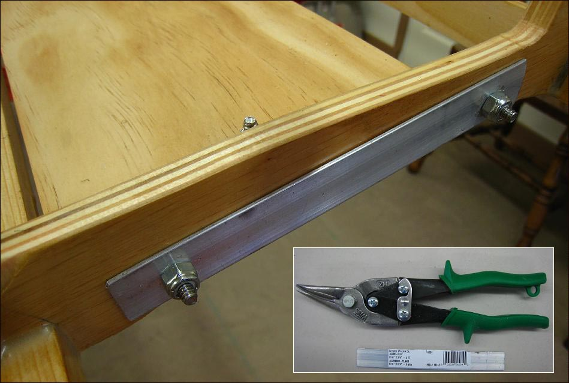

| Floor | Menu Previous Page Next Page |
|

A flat aluminum plate (1/16") is used on the back side of the cross section. This protects the plywood and provides a more secure base for the seat. Cut 4 plates with a hacksaw or tin snips. Match up the holes with the machine screws and drill. Stainless (ss) lock nuts are used with the stainless machine screws. As an option, All plates can be epoxied to the stringers before adding the machine screws / lock nuts.
|
|